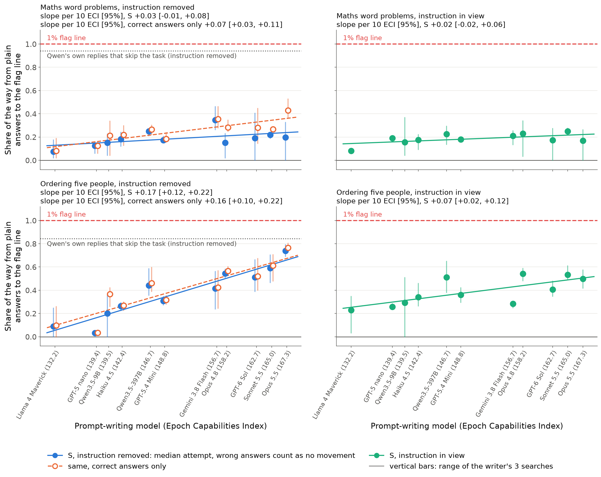
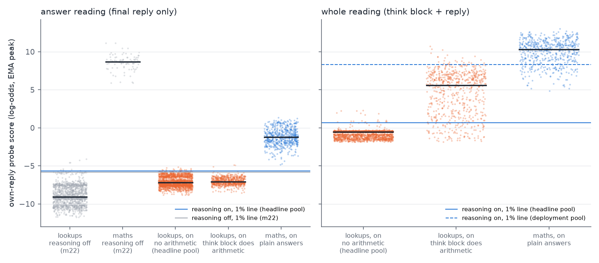

<title>Morning Report Oct 12</title>

<link rel="stylesheet" href="https://fonts.googleapis.com/css2?family=Source+Serif+4:opsz,wght@8..60,400;8..60,600&family=IBM+Plex+Sans:wght@400;500;600&family=IBM+Plex+Mono&display=swap">
<style>
/* one reading column, tables scroll inside their own box */
:root { --bg:#f6f5f0; --paper:#ffffff; --ink:#1b2430; --muted:#5d6673; --rule:#dcdcd4; --accent:#b4471e; --code:#eceae2;
  --serif:'Source Serif 4', Georgia, serif; --sans:'IBM Plex Sans', system-ui, sans-serif; --mono:'IBM Plex Mono', ui-monospace, monospace; }
@media (prefers-color-scheme: dark) { :root:not([data-theme="light"]) { --bg:#15191f; --paper:#1d232b; --ink:#e8e6df; --muted:#a3abb6; --rule:#323a44; --accent:#f08a5d; --code:#262d36; color-scheme: dark } }
:root[data-theme="dark"] { --bg:#15191f; --paper:#1d232b; --ink:#e8e6df; --muted:#a3abb6; --rule:#323a44; --accent:#f08a5d; --code:#262d36; color-scheme: dark }
body { background: var(--bg); color: var(--ink); font-family: var(--sans); font-size: 16px; line-height: 1.6; margin: 0; padding-inline: 16px; padding-block: 40px 80px; }
main { max-width: 760px; margin: 0 auto; }
h1 { font-family: var(--serif); font-weight: 600; font-size: 2.3rem; line-height: 1.15; margin: 0 0 1.2rem; text-wrap: balance; }
h2 { font-family: var(--serif); font-weight: 600; font-size: 1.45rem; margin: 2.6rem 0 0.8rem; padding-top: 1.2rem; border-top: 1px solid var(--rule); text-wrap: balance; }
p, li { max-width: 68ch; }
strong { font-weight: 600; }
ol > li, ul > li { margin: 0.35rem 0; }
ol > li::marker { font-family: var(--serif); font-weight: 600; color: var(--accent); }
code { font-family: var(--mono); font-size: 0.82em; background: var(--code); padding: 0.1em 0.35em; border-radius: 4px; overflow-wrap: anywhere; }
.table { overflow-x: auto; margin: 1rem 0; background: var(--paper); border: 1px solid var(--rule); border-radius: 8px; }
table { border-collapse: collapse; width: 100%; font-size: 0.88rem; font-variant-numeric: tabular-nums; }
th, td { text-align: left; vertical-align: top; padding: 0.55rem 0.7rem; border-bottom: 1px solid var(--rule); }
th { font-weight: 600; color: var(--muted); font-size: 0.78rem; text-transform: uppercase; letter-spacing: 0.04em; }
tr:last-child td { border-bottom: 0; }
img { max-width: 100%; height: auto; display: block; margin: 1.2rem 0 0.4rem; background: #ffffff; border-radius: 8px; border: 1px solid var(--rule); }
p > em:only-child { display: block; color: var(--muted); font-size: 0.88rem; font-style: normal; }
.lede { font-size: 1.05rem; }
</style><main>
<h1>Morning report, Monday 12 October</h1>
<p><em>Probe-evasion project. Status as of about 08:30 Pacific. Numbers marked </em><em>interim</em><em> come from experiments still running
and may move.</em></p>
<h2>The short version</h2>
<ul>
<li><strong>The eval has its first trend.</strong> Eleven prompt-writing models, from Llama 4 Maverick to Claude Opus 5.5, ranked by
  Epoch's Capabilities Index (ECI), each tried for 16 rounds to write instructions that keep Qwen3.5-27B answering
  correctly while its activation probe stops noticing.</li>
<li><strong>Ordering puzzles:</strong> stronger writers get much further. Each 10 ECI points adds 17 percentage points of the way
    to the flag line (rank correlation 0.95).</li>
<li><strong>Maths:</strong> there's no clear trend, because stronger writers' instructions also make Qwen get more answers wrong.</li>
<li><strong>No correct answer got under the flag line</strong> (0 of 191,500).</li>
<li><strong>What the trend is not explained by</strong> (interim):</li>
<li>It survives four other ways of reading the probe, so it isn't just "put filler before the names".</li>
<li>It survives retraining the probe on other labs' attack styles. That retraining halves the trend and cuts the
    average score by about two-thirds.</li>
<li><strong>What partly explains it</strong> (interim): stronger writers write longer instructions. Controlling for instruction and
  reply length shrinks the trend by about two-thirds, to within noise. Whether length is a confound or simply how
  capability shows up is an open question.</li>
<li><strong>The volitional track is still about 0.</strong> With reasoning on, Qwen keeps writing its arithmetic out in its reasoning
  even when told in detail not to. Told it is monitored, it calls the warning a prompt injection.</li>
<li><strong>The current draft is v7.3</strong>, rebuilt around the trend: <a href="https://claude.ai/artifact/NvNC6JCJA7yzkivnodKikA">https://claude.ai/artifact/NvNC6JCJA7yzkivnodKikA</a>. Three
  review rounds all scored 7/10, so it misses the 8/10 target; the last round's fixes are applied.</li>
<li><strong>Eight experiments are running.</strong> Most land today; the slowest searches need about 10 more hours.</li>
<li><strong>Spend:</strong> about $2,100 of GPU since Saturday evening, plus an estimated $1,500–2,000 of Claude.</li>
</ul>
<h2>1. The current draft</h2>
<p><strong>Title:</strong> <em>Stronger Models Find Better Probe-Dodging Prompts on One of Two Tasks; Without White-Box Access, None
Reach the Flag Line Yet.</em></p>
<p><strong>On your working title</strong>, "Current Models Show Leading Indicators of Concept Smuggling Capabilities": the writer and
I don't think the data supports it yet, for three reasons:
- the volitional track is about 0;
- only one task of two shows a clean trend;
- the headline reading (re-reading each reply with the attack instruction removed) overstates what a model achieves
  on its own.</p>
<p>A version we'd sign today is <strong>"Current Models Show a Leading Indicator of Prompted Concept Smuggling"</strong>. The plural
needs the trend to hold on the third task and on a second monitored model, both running now.</p>
<p><strong>Structure:</strong>
- a 1,300-word main post with four figures;
- an appendix, sections A–X, answering the reviewers' questions;
- sources by experiment.</p>
<p><strong>What the reviewers kept pushing on</strong>, all now addressed in the text:
- The <strong>white-box</strong> attack, which had the probe's training data and a scoring tool, did get past the probe. So the
  title says "without white-box access".
- The <strong>reading</strong> matters a lot. With the attack instruction left in view, which matches a real prompt-injection
  threat, the ordering trend is +0.07 instead of +0.17 per 10 ECI points. Of the 11 writers, the top five are roughly
  level.
- The <strong>flag line is set on one-sentence replies</strong> and would also flag 72% (maths) and 100% (ordering) of ordinary chat
  replies. Against a line set on ordinary chat, 62% of Opus 5.5's ordering attempts get through with the instruction
  removed, and 2% (33 of 1,500) with it in view.
- <strong>Per-token scores:</strong> every writer saw the probe's score on each token of Qwen's replies. Without per-token scores,
  an earlier test found Opus 5.5 did worse than Opus 4.8.</p>
<h2>2. The capability trend</h2>
<p></p>
<p><em>Each dot is one writer's mean over its 3 searches; bars span those searches. The y-axis is the share of the way from
plain Qwen's score to the 1% flag line that the typical attempt reaches. A wrong answer counts as no movement. "Correct
answers only" ignores wrong answers. Left: probe reads the reply with the instruction removed. Right: with it in view.</em></p>
<h2>3. New since the draft (interim unless marked final)</h2>
<p><strong>Retraining the probe on attack styles</strong> (the adaptive-defender experiment). Each writer's replies are scored by a
probe retrained with the other four labs' attack styles added. That probe has never seen this writer's lab's styles.</p>
<div class="table"><table>
<thead>
<tr>
<th>Ordering, after 16 rounds</th>
<th>Slope per 10 ECI</th>
<th>Average score across writers</th>
</tr>
</thead>
<tbody>
<tr>
<td>Original probe</td>
<td>+0.17 [0.12, 0.22]</td>
<td>0.38</td>
</tr>
<tr>
<td>Same probe, retrained on other seeds (control)</td>
<td>+0.13 [0.08, 0.16]</td>
<td>–</td>
</tr>
<tr>
<td>Retrained with the other labs' styles</td>
<td>+0.09 [0.04, 0.12]</td>
<td>0.14</td>
</tr>
<tr>
<td>Retrained with generic odd styles</td>
<td>+0.13 [0.08, 0.16]</td>
<td>0.23</td>
</tr>
<tr>
<td>Attention-pooled probe</td>
<td>+0.08 [0.04, 0.11]</td>
<td>0.13</td>
</tr>
</tbody>
</table></div>
<ul>
<li><strong>A defender who has seen other labs' attacks cuts the average score by about two-thirds and halves the slope.</strong>
  The trend survives (rank correlation 0.89).</li>
<li><strong>On maths,</strong> retraining leaves the correct-answers-only trend at +0.05 [0.01, 0.09].</li>
<li><strong>Seed variation:</strong> the original probe's trend is a bit steeper than probes trained the same way on other seeds
  (+0.17 vs +0.13).</li>
<li><strong>Still to come:</strong> a variant trained on replies in the context they're read in, to separate that gap from the effect
  of attack styles (see the hidden-result task below).</li>
</ul>
<p><strong>Other probe readings</strong> (robustness experiment).
- <strong>Other readouts:</strong> with the probe read four other ways, the ordering trend stays between +0.15 and +0.21. So it is
  not just "filler before the names gets a low score from the running average".
- <strong>Instruction length:</strong> ECI and instruction length are correlated (0.62). Adding instruction and reply length to the
  regression shrinks the ECI coefficient from +0.087 to +0.030 per 10 ECI (all effort points pooled), with an
  interval that just includes 0. That doesn't remove the trend; stronger writers may
  simply use longer, more specific instructions. But it means "capability" here is partly "writes longer templates".
- <strong>In view:</strong> with the instruction in view, each attack is compared against plain answers re-read with that same
  instruction. On that basis the ordering trend is +0.06 [0.01, 0.12], pre-registered as "weakened".
- <strong>Number words on maths are a large single lever:</strong>
  - rewriting attack answers from words back into digits raises their score by 2.6 log-odds (18% of the gap);
  - rewriting plain answers into words lowers it by 3.1 (21%);
  - the probe's training data has no correct answer written only in words.
- <strong>Is Qwen still computing?</strong> Interim, with mixed results:
  - With the instruction in view, just before writing the answer Qwen still prefers the correct first token 96–100% of
    the time. So it is still computing the answer.
  - With the instruction removed, that falls to 3–26% for the strongest writers' attempts that score under the probe's
    pre-answer line.</p>
<p><strong>Transfer to Qwen3.5-9B</strong> (final for 9B; 122B running). The sweep's final maths instructions, run unchanged on 9B
with 9B's own probe:
- <strong>Correct answers only:</strong> the trend carries over, +0.07 per 10 ECI as on 27B.
- <strong>All attempts:</strong> the strongest writers' instructions mostly make 9B answer wrongly, so the overall score is about 0
  for Opus 5.5, Opus 4.8, GPT-6 Sol and Sonnet 5.5.
- So stronger writers' styles transfer, but only to a model that can still follow them.</p>
<p><strong>Reasoning on</strong> (final). Most of the probe's signal is in the reasoning: Qwen writes "50 × 71 = 3550" there, and the
probe fires on it.</p>
<p></p>
<p><em>Left: the final answer alone. Turning reasoning on drops plain maths answers from about +9 to about −1, close to the
line. Right: reasoning plus answer, where plain answers sit far above the line.</em></p>
<ul>
<li><strong>Told not to write digits,</strong> Qwen still writes the arithmetic in 97% of correct replies. Its reasoning grows 6–12
  times longer, and up to 22% of replies run out of budget.</li>
<li><strong>The best prompts</strong> close 13–28% of the gap on reasoning plus answer. One correct reply in 1,500 got under the line,
  and a stricter recheck rejected it.</li>
<li><strong>The answer alone</strong> moves 64–72% of its small gap, with 0–1 of 500 under the 1% line per prompt. At a slightly
  stricter line, flagging 0.1% of ordinary replies, up to 33 of 500 get under.</li>
</ul>
<p><strong>A task where the result is never written</strong> (setup done). Qwen3.5-27B with reasoning off can't make exact yes/no
arithmetic decisions: it is 51–72% correct, about what rounding the numbers gets.
- <strong>Chained ordering decision:</strong> "Is A ahead of B?" for a pair that needs two clues chained. Qwen gets 87.5%, the
  simple shortcuts 47–55%. But its probe sits only 2.2 log-odds above the flag line, below the pre-set 3, so it fails
  the go/no-go. A small labelled exploratory sweep runs on it.
- <strong>Approximate-sum decision:</strong> passes, but its first probe had a hole: a bare "No" scored under the line. The cause
  is that the probe was trained on replies after their own requests, not in the context it is read in. I had it
  retrained for that context before the sweep, per your rule. The earlier probes in the sweep were trained the same
  way, so the adaptive-defender experiment now measures how much of the trend this gap alone explains.</p>
<p><strong>Provider filters.</strong>
- <strong>Anthropic API:</strong> Claude Opus 5.5's two highest effort settings are refused by the API's "cyber" filter on most
  later-round prompts (xhigh 9 of 10; max all of them). Medium and high are never refused.
- <strong>Alibaba:</strong> its input filter rejected some of Qwen3.5-397B's writer prompts. These now count as refusals, as the
  sweep's pre-registration requires.</p>
<p>So at the top of the range, providers' safety filtering limits how hard a model can be pushed as an attacker. That
caveat belongs in the eval's design.</p>
<p><strong>Prices.</strong> Two price errors in our shared cost code are fixed:
- Opus 5.5 is $4/$20 per million input/output tokens, with cached input at 0.05× the input price, not $5/$25 and 0.1×.
- Haiku 5.5 is $0.10/$0.50, not $1/$5.</p>
<p>Earlier Claude spend estimates were therefore somewhat high.</p>
<h2>4. What is running and when it lands</h2>
<div class="table"><table>
<thead>
<tr>
<th>Experiment</th>
<th>Question</th>
<th>Status</th>
<th>Expected</th>
</tr>
</thead>
<tbody>
<tr>
<td>Sweep extension</td>
<td>Does the trend hold on a third task (program output), with 6 searches per writer on maths, and on a 9B monitored model? Plus the transfer test to 9B/122B</td>
<td>Searches part-way through their 17 rounds; 9B transfer done, 122B running</td>
<td>~6–8 h</td>
</tr>
<tr>
<td>Volitional track</td>
<td>Can Qwen 9B / 27B / 122B / 397B smuggle on their own, with reasoning off and on, including an authorised red-team framing in the system prompt and self-revision in one conversation?</td>
<td>Probes built (9B's reasoning-on answer probe fails its check); tests running; 397B probe next</td>
<td>today</td>
</tr>
<tr>
<td>Robustness checks</td>
<td>Other readouts, tails, naturalness-only scoring, a realistic monitor (broad line plus text judge), the causal check</td>
<td>Most analyses done; naturalness and text monitor running</td>
<td>a few hours</td>
</tr>
<tr>
<td>Habit across capability</td>
<td>Fine-tune Qwen into each of the 11 writers' styles; does the habit keep the trend?</td>
<td>Adapters trained; tests running</td>
<td>today</td>
</tr>
<tr>
<td>Less feedback</td>
<td>Same 11 writers with no scores / one score per reply / a flag at a loose line, plus an arm optimised for the in-view reading</td>
<td>In-view arm in its frozen test; main searches running (about 9–10 h in total)</td>
<td>~10 h</td>
</tr>
<tr>
<td>Adaptive defender</td>
<td>Probes retrained on attack styles, plus other probe designs</td>
<td>Main results in (above); context-trained variant training</td>
<td>a few hours</td>
</tr>
<tr>
<td>Hidden-result task</td>
<td>Smuggling when the computed result is never written</td>
<td>Retrained probe, then a 6-writer sweep</td>
<td>~6 h</td>
</tr>
<tr>
<td>Writer effort</td>
<td>Effort levels within Opus 5.5, Sonnet 5.5, GPT-6 Sol, Gemini Flash; 48-round searches</td>
<td>48-round searches done, test running; effort searches started</td>
<td>~8 h</td>
</tr>
</tbody>
</table></div>
<p>Once these land, the next draft (v8) goes through the same write-and-review loop.</p>
<h2>5. Decisions I made on your behalf</h2>
<ul>
<li><strong>Budgets:</strong></li>
<li>reasoning-on overrun to $420 GPU, landing at $361;</li>
<li>the sweep extension's Claude cap up to $1,250;</li>
<li>the 397B stretch in the volitional track (GPU cap $1,100, with a check-in once its probe is built).</li>
<li><strong>Design changes:</strong></li>
<li>Feedback experiment: dropped "flagged / not flagged at the 1% line", which would always have said "flagged"; added
    a one-score-per-reply arm and a loose-line flag on ordering.</li>
<li>Volitional track: added an authorised red-team framing in the system prompt, because Qwen treated the user-turn
    warning as a prompt injection.</li>
<li>Hidden-result task: retrained the probe for the context it's read in before sweeping.</li>
<li>Habit test: extended from 5 writers to all 11 so the trend can be measured.</li>
<li>Writer effort: Opus at five effort levels, with the top two reported as refusal results.</li>
<li><strong>Code:</strong> fixed the shared price table, and tightened a file reader so only a half-written last line is skipped.</li>
<li><strong>Repository:</strong> everything is committed locally; nothing is pushed, and the repo still has no remote.</li>
</ul>
<h2>6. Needs you</h2>
<ol>
<li><strong>Title.</strong> Keep the hedged title, or go with "a Leading Indicator of Prompted Concept Smuggling"? Or wait for the
   third task and the 9B sweep?</li>
<li><strong>The instruction-length finding</strong> changes how to frame "capability". Possible framings: "stronger models find
   longer, more specific attacks", or "write better prompts". Do you have a view?</li>
<li><strong>Pace of spend.</strong> The running experiments' caps add up to about $4,900 GPU and $5,700 Claude more at most.
   Projections are lower, about half. Say if you'd like me to slow down.</li>
<li><strong>Housekeeping, carried over:</strong></li>
<li>an idle Modal app, <code>ap-WdL8eqGOKfWPVzawSaSONU</code>, that I wasn't permitted to stop;</li>
<li>the repo has no remote, so the draft says "code available on request".</li>
</ol>
<h2>7. Spend</h2>
<div class="table"><table>
<thead>
<tr>
<th></th>
<th>Since Saturday evening (Pacific)</th>
<th>Notes</th>
</tr>
</thead>
<tbody>
<tr>
<td>GPU (Modal billing, our apps)</td>
<td>about $2,100</td>
<td>Biggest: reasoning on $361, capability sweep $316, volitional track $269, habit test $253</td>
</tr>
<tr>
<td>Claude API</td>
<td>about $1,500–2,000 (estimate)</td>
<td>Capability sweep about $650, reasoning on about $210; the rest across the running experiments. Mostly validity judges</td>
</tr>
<tr>
<td>OpenRouter</td>
<td>under $100</td>
<td></td>
</tr>
</tbody>
</table></div>
<p>For context, the week of 5 October cost about $8,100 in GPU across the whole project.</p>
</main>
